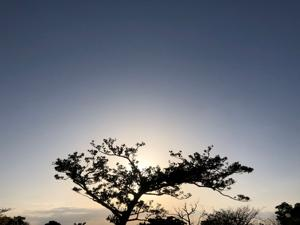
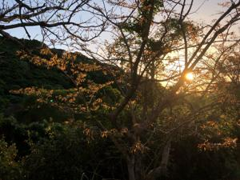

うるがいの話 ある日
最新: ＤＸ人材研修の最終課題【うるがいの話 ある日】とは 一日だけのプログです
『うるがいの話』の最新一日だけのプログで、通信料が少なく経済的だ。カニの画像をクリックすると全ての日付が載る『うるがいの話』サイトを表示します
|
|
【うるがいの話】 うるがい(ｳﾙｶﾞｲ urugai)とは、『もずくがに』の名前でとても大きくなります。 |
|---|---|
|
|
【カミマヤーの話】 猫のことを方言でマヤーといいます。カミマヤー（kamimayaa）とは、神の猫のことです。 |
|
【たながぁの音楽】 たながぁ（ﾀﾅｶﾞｰtanagaa）とは手長えびのことで、何種類かあり大きいのは車 エビぐらいになります。 |

|
【ぶながぁの話】 ぶながー(bunagaa)とは、赤い髪の毛、赤い身体、そして身長は１ｍ２０ｃｍ ぐらい、川の蟹を食べているの目撃された。場所は沖縄県国頭郡大宜味村のと ある村僕の隣近所に住んでいる爺さんから、聞いた話です。 |
|
|
【ギーマの話】 ギーマ(giima)とは、山原の里山に咲くスズランに似た、 花を付けます。実は食べられます、 気が付くと口の周りが紫になっています。 |
2022年04月06日 (水）ＤＸ人材研修の最終課題
15:11

ＤＸ人材研修の最終課題の提出期限は明日だが、念のため今日の午前中に提出
する。２６名中１３番目の提出だった。課題は１０問の質問に回答するのだが
これまでやり方で一つのドキュメントで提出した後に、回答は１０問に枠が仕
切られたグーグルフォールで回答するように指摘される。直ぐに、１０の枠に
回答を張り付けると、ん！！９問目の回答が洩れている、おぇ！。３０分程か
けて回答再提出する。期限まで余裕があって良かった・・・、合格するか否か
は別として気分はいい。あとは、動画研修の最終課題第８回の提出である。４
月４日（火）に２度ＮＧをくらった第７回目の課題を提出した後のＳｌａｃｋ
のやり取りで、どうもここでも期限を過ぎていたらしい。おほほ
講師 12:39
確認しました、OKです。
Premiere Proの無料提供は基本的には3月いっぱいまでの予定だったのですが、
第8回の課題がまだだと思います。Premiere Proの利用延長を希望されますか？
私 14:51
はい、延長します
講師 19:14
わかりました。では、登録メールアドレスを教えてもらえますか？
あと、いつ頃までに残りの課題を提出できそうでしょうか？
私 23:03
ご迷惑をお掛けしています。
Googleメールアドレスは → @@@@@@@@@@@@gmail.com
残りの８回目の課題は、４月２５日（月）までに提出します
講師:絵文字のにこっ: ← 翌日に確認を意図する絵文字がついていた
この最後の希望日を答えるため、２２時からまだ未視聴だった４５分の第８回
目講義のユーチューブを見る、結構大変である。

１５時０４分 ビットコインの総資産 ￥１６、２８２↓